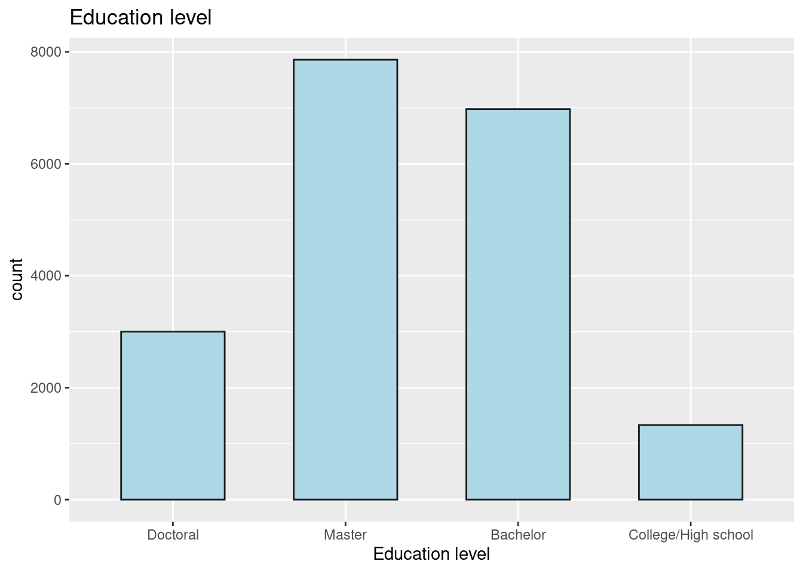
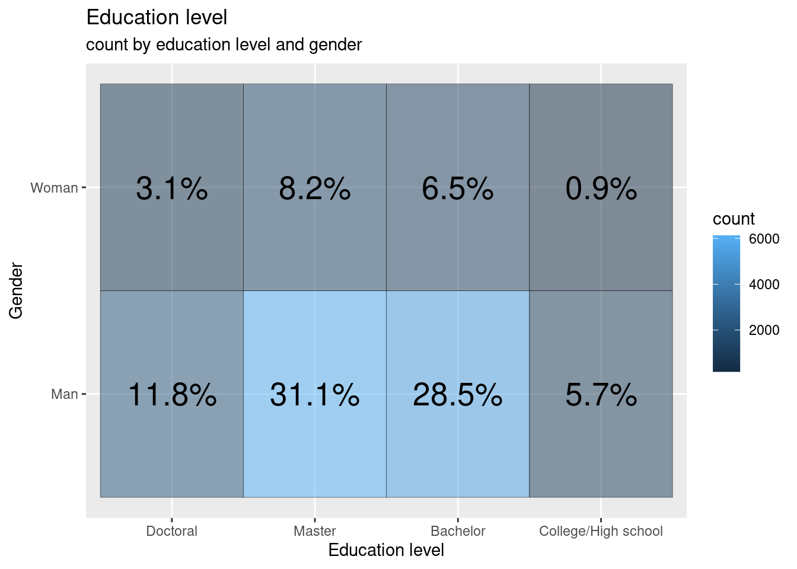

library(tidyverse)
library(ggplot2)
library("readxl")
library(dplyr)
knitr::opts_chunk$set(echo = TRUE, warning=FALSE, message=FALSE)Homwework 3
homework_3
I will be using a new data set - Kaggle Data Science responses for R, conducted in 2020. This data contains insights into Data Science enthusiasts and their information from all over the world. The information consists of age, gender, country of residence, education level, current occupation, experience with writing code, and programming languages used.
Read the data set
data <- read.csv("kaggle_survey_2020_responses.csv")
head(data) Time.from.Start.to.Finish..seconds. Q1 Q2 Q3
1 1838 35-39 Man Colombia
2 289287 30-34 Man United States of America
3 860 35-39 Man Argentina
4 507 30-34 Man United States of America
5 78 30-34 Man Japan
6 401 30-34 Man India
Q4 Q5 Q6 Q7_Part_1 Q7_Part_2 Q7_Part_3
1 Doctoral degree Student 5-10 years Python R SQL
2 Master’s degree Data Engineer 5-10 years Python R SQL
3 Bachelor’s degree Software Engineer 10-20 years
4 Master’s degree Data Scientist 5-10 years Python SQL
5 Master’s degree Software Engineer 3-5 years Python
6 Bachelor’s degree Data Analyst < 1 years Python R
Q7_Part_4 Q7_Part_5 Q7_Part_6 Q7_Part_7 Q7_Part_8 Q7_Part_9 Q7_Part_10
1 C Javascript
2
3 Java Javascript Bash
4 Bash
5
6
Q7_Part_11 Q7_Part_12 Q7_OTHER Q8
1 MATLAB Other Python
2 Python
3 R
4 Python
5 Python
6 PythonLater, we find basic descriptives about data such as col names and dimensions
dim(data)[1] 20036 21colnames(data) [1] "Time.from.Start.to.Finish..seconds." "Q1"
[3] "Q2" "Q3"
[5] "Q4" "Q5"
[7] "Q6" "Q7_Part_1"
[9] "Q7_Part_2" "Q7_Part_3"
[11] "Q7_Part_4" "Q7_Part_5"
[13] "Q7_Part_6" "Q7_Part_7"
[15] "Q7_Part_8" "Q7_Part_9"
[17] "Q7_Part_10" "Q7_Part_11"
[19] "Q7_Part_12" "Q7_OTHER"
[21] "Q8" Understanding the data
Understanding the data:
The data set contains 20036 rows representing 20037 participants in the survey. The 21 columns in the data set represent the survey questions, with exception to the time taken for survey column. Each column in the data represents respondent’s answer to each survey question.
- age - represents age of the respondent.
- gender - represents the respondent’s gender.
- In which country do you currently reside? - country of respondent.
- highest level of formal education - The four categories of responses to the questionnaire are as follows: people who have less education than a bachelor’s degree, people who have a master’s degree, and people who have more education than a master’s degree (like a doctorate)
- Select the title most similar to your current role (or most recent title if retired): - Selected Choice - the current profession of the respondent.
- For how many years have you been writing code and/or programming? - experience with writing code or programming for each participant.
- What programming languages do you use on a regular basis? (Select all that apply) - Selected Choice - Python - programming languages that are generally used by participants. The following columns have the selected answers to the above question. The answers span from Q7_part_1 to Q7_Other.
- What programming language would you recommend an aspiring data scientist to learn first? - Selected Choice - The respondent’s recommendation of which programming language to learn.
Data tidying and mutation
options(warn = -1)
options(scipen = 10000)
library(tidyverse)
library(scales)
library(RColorBrewer)
library(viridis)
library(ggrepel)
library(dplyr)
annotate <- ggplot2::annotateWe first mutate the data and create groups - Doctoral degree, Professional degree are mapped to “Doctoral” and “Some college/university study without earning a bachelor’s degree,No formal education past high school” are mapped to “College/High school”.
data <- data %>%
mutate(Edu = case_when(Q4 == "Bachelor’s degree" ~ "Bachelor",
Q4 == "Master’s degree" ~ "Master",
Q4 %in% c("Doctoral degree","Professional degree") ~ "Doctoral",
Q4 %in% c("Some college/university study without earning a bachelor’s degree","No formal education past high school") ~ "College/High school")) We further mutate the data. The given countries are changed based on the continents. All countries in Europe are mapped to Europe, countries like India, China, etc are mapped to Asia.
data <- data %>%
mutate(Continent = case_when(Q3 %in% c("Austria", "Belgium", "Bulgaria", "Croatia", "Czech Republic",
"Denmark", "Estonia", "Finland", "France", "Germany", "Greece",
"Hungary", "Ireland", "Italy", "Lativia", "Lithuania",
"Netherlands", "Poland", "Portugal", "Romania", "Slovakia",
"United Kingdom of Great Britain and Northern Ireland",
"Slovenia","Spain", "Sweden", "Russia", "Switzerland",
"Ukraine", "Belarus", "Norway") ~ "Europe",
Q3 %in% c("Canada", "United States of America", "Mexico") ~ "North America",
Q3 %in% c("India", "China", "Japan", "Turkey", "South Korea", "Isreal", "Indonesia", "Hong Kong (S.A.R.) ",
"Singapore", "Viet Nam", "Pakistan", "Malaysia", "Bangladesh", "Philippines", "Sri Lanka",
"Thailand", "Republic of Korea", "Saudi Arabia", "Taiwan", "Nepal", "United Arab Emirates") ~ "Asia",
Q3 %in% c("Argentina", "Brazil", "Chile", "Colombia", "Peru", "Venezuela") ~ "South America",
Q3 %in% c("Egypt", "Nigeria", "Kenya", "South Africa", "Morocco", "Algeria", "Ghana", "Tunisia") ~ "Africa",
Q3 %in% c("Australia", "New Zealand") ~ "Australia"))Statistics and group by functions
Using group by for continent-
data_group <- data %>%
group_by(Continent)
data_group# A tibble: 20,036 × 23
# Groups: Continent [7]
Time.fr…¹ Q1 Q2 Q3 Q4 Q5 Q6 Q7_Pa…² Q7_Pa…³ Q7_Pa…⁴ Q7_Pa…⁵
<int> <chr> <chr> <chr> <chr> <chr> <chr> <chr> <chr> <chr> <chr>
1 1838 35-39 Man Colo… Doct… Stud… 5-10… "Pytho… "R" "SQL" "C"
2 289287 30-34 Man Unit… Mast… Data… 5-10… "Pytho… "R" "SQL" ""
3 860 35-39 Man Arge… Bach… Soft… 10-2… "" "" "" ""
4 507 30-34 Man Unit… Mast… Data… 5-10… "Pytho… "" "SQL" ""
5 78 30-34 Man Japan Mast… Soft… 3-5 … "Pytho… "" "" ""
6 401 30-34 Man India Bach… Data… < 1 … "Pytho… "R" "" ""
7 748 22-24 Man Braz… Bach… Stud… 3-5 … "Pytho… "R" "" "C"
8 171196 25-29 Woman China Mast… Stud… < 1 … "" "R" "" ""
9 762 35-39 Man Germ… Doct… Data… 5-10… "Pytho… "" "SQL" ""
10 150 22-24 Man China No f… Stud… < 1 … "Pytho… "" "SQL" ""
# … with 20,026 more rows, 12 more variables: Q7_Part_5 <chr>, Q7_Part_6 <chr>,
# Q7_Part_7 <chr>, Q7_Part_8 <chr>, Q7_Part_9 <chr>, Q7_Part_10 <chr>,
# Q7_Part_11 <chr>, Q7_Part_12 <chr>, Q7_OTHER <chr>, Q8 <chr>, Edu <chr>,
# Continent <chr>, and abbreviated variable names
# ¹Time.from.Start.to.Finish..seconds., ²Q7_Part_1, ³Q7_Part_2, ⁴Q7_Part_3,
# ⁵Q7_Part_4summarize(data, mean(Time.from.Start.to.Finish..seconds.), na.rm = TRUE) mean(Time.from.Start.to.Finish..seconds.) na.rm
1 9155.865 TRUEsummarize(data, sd(Time.from.Start.to.Finish..seconds.), na.rm = TRUE) sd(Time.from.Start.to.Finish..seconds.) na.rm
1 61367.6 TRUEsummarize(data, median(Time.from.Start.to.Finish..seconds.), na.rm = TRUE) median(Time.from.Start.to.Finish..seconds.) na.rm
1 626 TRUEVisualization
Education level against number of respondents (count).
education <- as.data.frame(table(data$Edu))
ggplot(education, aes(reorder(Var1, +Freq), Freq))+
geom_bar(col = "gray10", stat = "identity", width = 0.6, fill = "lightblue")+
scale_x_discrete(limits = c("Doctoral","Master", "Bachelor", "College/High school"))+
labs(title = "Education level", y = "count", x = "Education level")
- Gender vs education level
tile2 <- data %>%
filter(Q2 %in% c("Woman", "Man")) %>%
group_by(Q2, Edu) %>%
summarise(count = n(), .groups = 'drop')
ggplot(tile2, aes(Edu, Q2))+
geom_tile(aes(fill = count), colour = "gray10", alpha = 0.5)+
scale_x_discrete(limits = c("Doctoral","Master", "Bachelor", "College/High school"))+
geom_text(aes(label = paste0(round(count/sum(tile2$count) * 100,1), "%")), size = 7)+
labs(title = "Education level", subtitle = "count by education level and gender", y = "Gender", x = "Education level")
In this homework, I have only used group_by(), statistics commands and visualizations using ggplot. The conclusions drawn from this data are Masters degree is the most popular among participants who took the survey. Follwing are the quetions that will be answered using plots and analysis in final project-
Number of countries involved in the data set and is the data set skewed towards a specific continent given the population?
Most recommended language for Data Science aspirants irrespective of gender, age, or country.
Which continent in the world has highest number of skilled Data Scientists based on the experience level?
Which education level is currently the most popular?
Respondents of which continents are majorly picking up skills in Data Science?
Can we explain education level based on gender(man and women) and age?
Is a highest level of education required to work in professions such as Research Scientist, Machine Learning Engineer, Data Scientist, Statiscian?